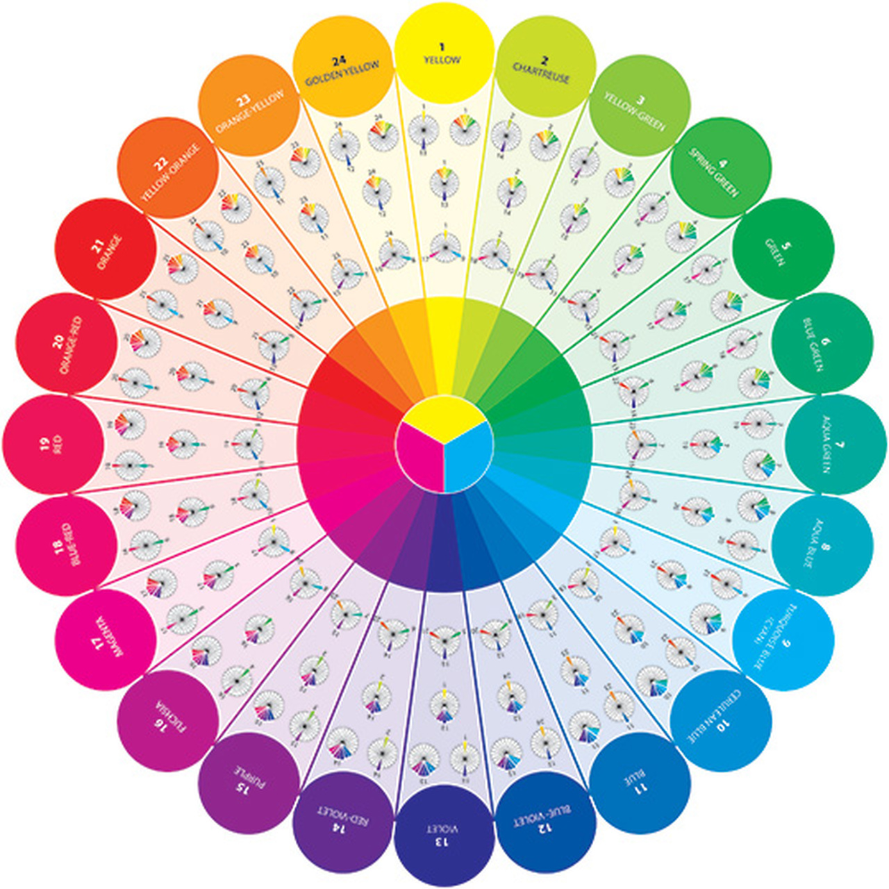

Os 4 P’s do marketing são uma espécie de preparo para a criação de um produto para ter o melhor aproveitamento possível do mesmo, são eles: produto, preço, praça e promoção. O produto visa pesquisar coisas como a necessidade do cliente, se o produto é útil para ajudar no dia a dia e etc. Preço e praça não são a mesma coisa, mas tem uma ideia semelhante que anda de mãos dadas como por exemplo a onde vai estar seu publico alvo(praça) e assim ter um melhor balanço sobre o preço de um produto por exemplo. E também a promoção do produto que se dá através de propagandas não só propagandas na mídia e sim como você vai promover o produto em si pois há inúmeras possibilidades, mas dependendo do produto algumas ficam inviáveis. Por exemplo um produto focado para o publico mais jovem, a promoção dele se daria melhor pela Tv ou pela internet? Todos eles se juntam para garantir qualidade e evitar desperdícios.
Além disso temos também a teoria das cores que envolve uma parte importante nos trabalhos de design. Todas as cores nos produtos e projetos têm que ser bem pensadas e estudadas minimamente antes de ser aplicadas, assim você pode transmitir emoções apenas com o jogo de cores. Ou simplesmente mostrar harmonia entre elas no seu trabalho.